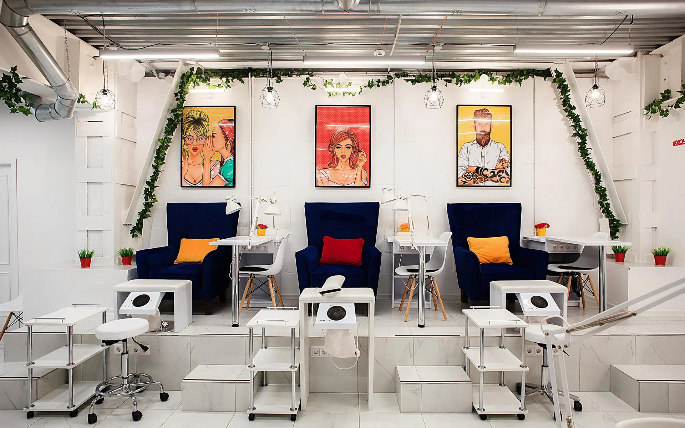
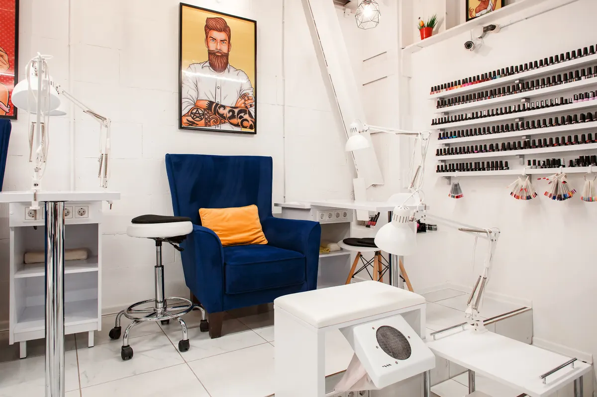
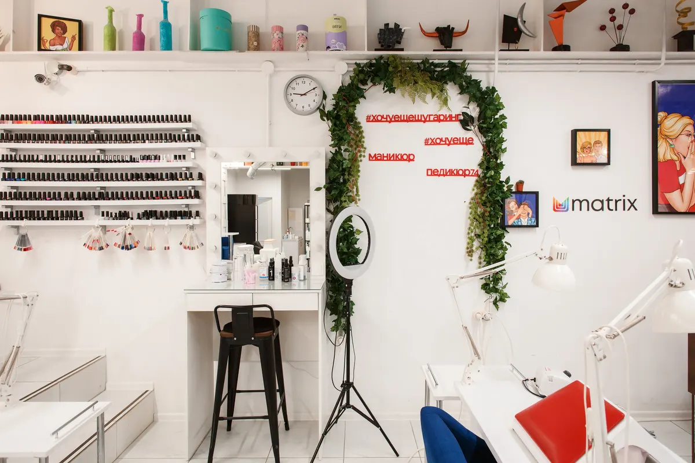
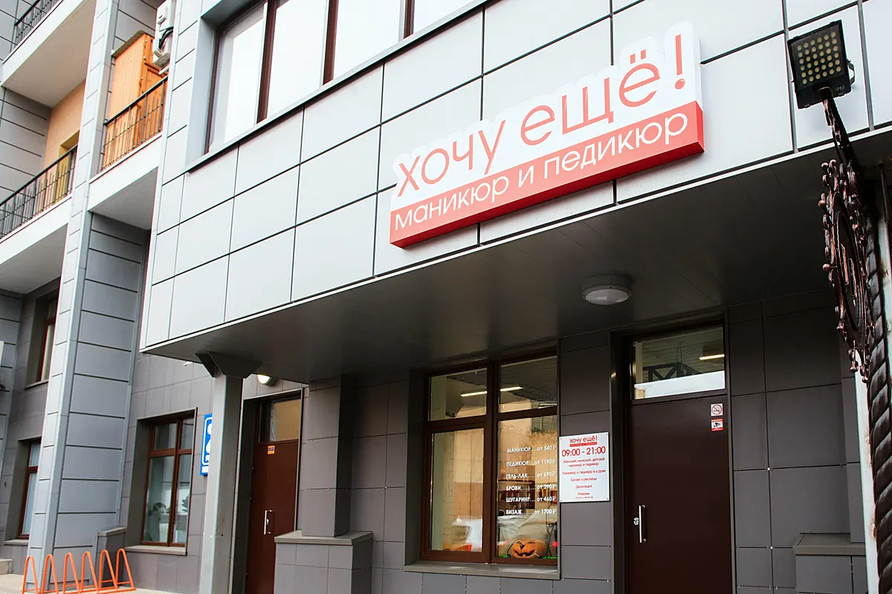

Маникюр и педикюр · Челябинск
Маникюр и педикюр в Челябинске – цена до записи
Прайс с карточки на Яндекс Картах – ниже, на одном экране. Выберите услугу, день и время – сообщение в WhatsApp салона соберётся само. Ежедневно 9:00–21:00, Лесопарковая, 7А.
- Цена названа до записи
- Ежедневно 9:00–21:00
- 4,9 на Яндекс.Картах

Что входит в маникюр с гель-лаком
Входит
- Снятие старого гель-лака
- Аппаратный или комбинированный маникюр
- Выравнивание ногтевой пластины
- Покрытие гель-лаком в один тон
Отдельно, если нужно
- Дизайн (френч, лунный) – отдельно, 600 ₽
- Наращивание ногтей – отдельная услуга, 4 000 ₽
- В педикюре цена зависит от вида покрытия – варианты в строках прайса
Цена названа до записи
Все услуги маникюра и педикюра с карточки на Яндекс Картах. Где цена зависит от покрытия, в строке указаны варианты.
Маникюр
- Маникюрлечебным лаком 1 400 ₽, цветным лаком 1 700 ₽от 1 400 ₽
- Маникюр + гель-лак в 1 тонсо снятием старого гель-лака, выравниванием ногтевой пластины2 400 ₽
- Маникюр + гель-лак Luxio в 1 тонгель-лак канадского бренда Luxio3 000 ₽
- Японский маникюр P.Shineпитательный уход: витамины А и Е, кератин, пчелиная пыльца1 900 ₽
- Немецкий маникюрнатуральный жемчужный блеск, по описанию – до месяца2 000 ₽
- Пилочный маникюрбез ножниц, кусачек и аппарата2 000 ₽
- Маникюр с восстановлением IBXдля ломких и повреждённых ногтей1 900 ₽
- Ламинирование ногтейдля слабых и слоящихся ногтей2 500 ₽
- Наращивание ногтейс покрытием гель-лаком в 1 тон4 000 ₽
- Дизайн: френч, лунныйотдельно к покрытию600 ₽
Педикюр
- Экспресс-педикюрлечебным лаком 1 900 ₽, лаком 2 300 ₽, гель-лаком 2 700 ₽от 1 900 ₽
- Педикюрлечебным лаком 2 400 ₽, лаком 3 100 ₽, гель-лаком 3 600 ₽, Luxio 3 900 ₽от 2 400 ₽
- Педикюр Smart 2.0лечебным лаком 2 700 ₽, лаком 3 100 ₽, гель-лаком 3 600 ₽, Luxio 3 900 ₽от 2 700 ₽
- SMARTICURE педикюрлечебным лаком 2 700 ₽, лаком 3 100 ₽, гель-лаком 3 600 ₽, Luxio 3 900 ₽от 2 700 ₽
- Японский педикюрSmart-педикюр и эко-глянцевание ногтей3 000 ₽
- Фруктовый педикюр Kart (Израиль)лечебным лаком 3 400 ₽, цветным 3 800 ₽, гель-лаком 4 300 ₽, Luxio 4 600 ₽от 3 400 ₽
- Покрытие плёнки на ноги2 больших пальца 600 ₽, все пальцы 1 500 ₽от 600 ₽
Цены взяты с карточки «Хочу Еще!» на Яндекс Картах на 14 октября 2026, на карточке цены помечены как давно не обновлявшиеся: актуальную цену уточняйте при записи. Время процедур на карточке не указано.
Как проходит запись
- 01
Выбираете услугу, день и время
Форма записи вверху страницы. Цена в строке – из прайса ниже.
- 02
Сообщение уходит в WhatsApp салона
Текст собирается сам: услуга, день, время. Можно позвонить: +7 (909) 085-08-58.
- 03
Покрытие и дизайн – при записи
Если нужен френч или другое покрытие, напишите об этом администратору: цену уточнят заранее.
- 04
Приходите на Лесопарковую, 7А
Салон открыт ежедневно с 9:00 до 21:00, первый этаж.



Из описаний услуг на Картах
Японский маникюр P.Shine
Питание ногтевой пластины натуральными ингредиентами: витамины А и Е, кератин, пчелиная пыльца, японский морской кремний.
Пилочный маникюр без ножниц
Кутикула и боковые валики обрабатываются только пилками, без ножниц, кусачек и аппарата.
IBX для ломких ногтей
Система восстановления и укрепления истончённых и повреждённых ногтей, в услугу входит маникюр.
Ламинирование для слабых ногтей
Для тех, у кого ногти слоятся и покрытие держится всего несколько дней, по описанию услуги.
Отзывы с Яндекс.Карт
«Мне студия очень нравится, хотя знакомство наше только началось, но я уже готова его продолжить, очень обонятельный администратор, мастер по маникюру Екатерина профи, очень внимательна, аккуратно и красиво сделала мне ноготки, мастер педикюра: была на сеансе у Елены и у Оксаны, работа обеих мастеров понравилась💞 рекомендую, студия симпатичная, атмосфера доброжелательная, чисто, комфортно»
Татьяна Курамшина · 13 сентября 2026
«Люблю этот салон-уютно,современно,чувствуешь себя желанным гостем,тебе всегда рады,внимательны к любой просьбе. Прекрасный уровень услуг. Посещаю уже несколько лет,и не хочу менять. Спасибо,что вы есть,процветайте!»
Наталья С. · 20 июня 2026
«Делала здесь маникюр и педикюр у мастера Елены. Очень понравилось отношение мастеров — девочки внимательные, учитывают пожелания, делают аккуратно. Гель-лак держится долго, уже хожу почти месяц, сколов нет . В салоне чисто, уютно, предлагают чай/кофе. Обязательно приду еще!»
Екатерина Ник · 3 мая 2026
Отзывы с карточки на Яндекс.Картах, без правок.
Частые вопросы
От чего зависит цена педикюра?
От вида покрытия: лечебным лаком, лаком, гель-лаком или гель-лаком Luxio. Все варианты указаны в строках прайса.
Чем отличаются японский, немецкий и пилочный маникюр?
Японский P.Shine – питательный уход за ногтевой пластиной, немецкий – натуральный блеск, пилочный – обработка только пилками, без ножниц, кусачек и аппарата. Подробности – в описании услуг на Яндекс Картах.
Можно ли сделать маникюр и педикюр сразу?
Да, на табличке у входа указан маникюр и педикюр в четыре руки. Стоимость – по прайсу каждой услуги, детали уточняйте при записи.
Чем можно оплатить?
На карточке салона отмечена оплата картой, а также парковка и Wi-Fi.
Запись онлайн, ежедневно с 9 до 21
- Адрес
- ул. Лесопарковая, 7А (этаж 1), Челябинск
- Часы
- ежедневно 9:00–21:00
- Телефон
- +7 (909) 085-08-58